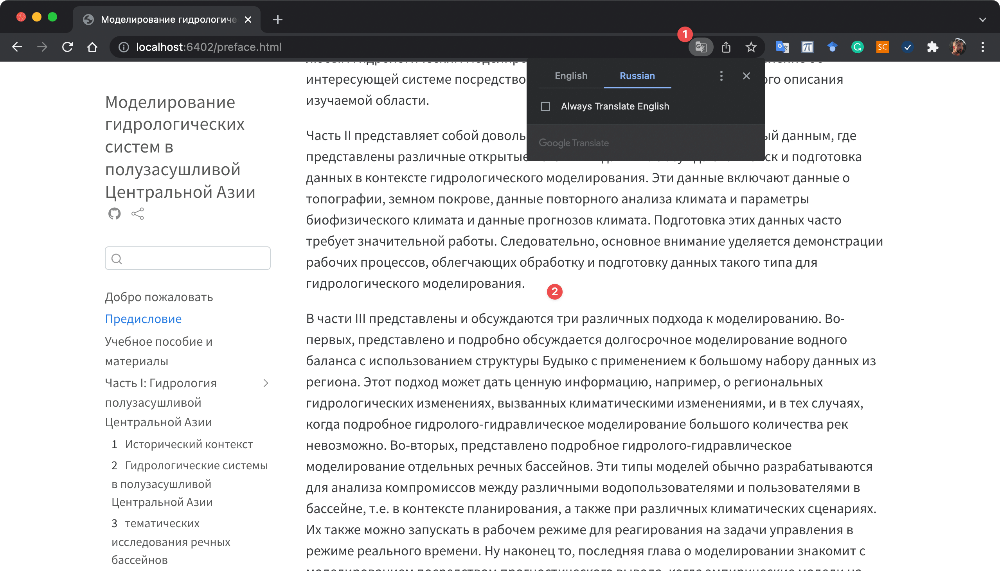

Preface
This is a book and study guide about the hydrology of semi-arid Central Asia and applied hydrological modeling in the region. It is geared towards students and young professionals in Central Asia who are interested in learning modern hydrological modeling approaches. The book teaches by example and focuses on two example catchments in the Syr Darya and Amu Darya river basins as case studies. The methods demonstrated here can be applied elsewhere.
Hydrological models come in different incarnations and flavors. Hydrological water balance models, in this text also sometimes referred to as rainfall-runoff models, were developed to help us gain an understanding of the partitioning of available water into different fluxes and storage compartments over time in the natural system under consideration. This natural system normally consists of different interlinked compartments, including surface water and the unsaturated (soil moisture) and unsaturated (groundwater) zones. These models simulate the flow of water through these compartments. They are most often used in the context of water management and planning applications, i.e., for basin planning under climate change and population growth scenarios to allocate water between different uses and users on the one hand. On the other, these models are also used operationally to close supply-demand gaps in real-time management tasks and for short-term forecasting.
Where large amounts of data are available, empirical models can be implemented. These models strictly speaking do rely on the explicit simulation of the water balance of individual compartments. Rather, they learn patterns from measured time series of discharge and other relevant variables, such as temperature, precipitation, snow cover and then use these pattern between the time-ordered data for forecasting variable of interest (i.e., discharge, water levels, etc.).
In Part I of the book, key hydro-climatological characteristics of the region are presented. This Section draws inspiration from Victor Shults’ “Rivers of Middle Asia” (Shults 1965). Through the collection of a large number of in-situ hydrological data from all over the region and in combination with a plethora of newly available data, a grand modern regional perspective on Central Asian hydrology becomes possible in the tradition of Shults.
Two important basins are highlighted as in-depth case studies, i.e. the Gunt River Basins in the Amu Darya catchment and the Chirchik River basin in the Syr Darya. The analyses of these catchments draws on available data from the Central Asian Hydrometeorological Services and on global and entirely public hydro-climatological as well as land cover datasets. The goal of these introductory chapters is to familiarize the student with the first steps prior to any hydrological modeling, i.e. to obtain a robust understand of the system of interest through a thorough hydro-climatological characterization of the study area.
Part II is a rather large section of the book which is then devoted to data where different open data sources are presented. Retrieval and data preparation in the context of hydrological modeling are discussed. These data include data on topography, land cover, climate reanalysis data and parameters on biophysical climate and climate projections data. The preparation of these data often requires significant work. Hence, a focus lies on demonstrating workflows to facilitate the handling and preparation of these type of data for hydrological modeling.
In Part III, three different modeling approach are presented and discussed. First, long-term water balance modeling using the Budyko framework is presented and discussed in depth with an application to a large dataset from the region. This approach can yield powerful insights for example on regional hydrological changes due to climatic changes and where the detailed hydrological-hydraulic modeling of a large number of rivers is impracticable. Second, detailed hydrological-hydraulic modeling of individual river basins is presented. These types of models are normally developed for tradeoff analysis between different water uses and users in a basin, i.e. in the planning context and also under different climate scenarios. They can also be run in operational mode to respond to real-time management challenges. Finally, the last modeling chapter introduces modeling through predictive inference where empirical data-driven models are setup for forecasting discharge at particular locations in a basin. These models rely on large amounts of measured discharge data and hence, their application is limited to places where such data are available.
Part III also includes two Chapters on hydrological model applications where real-world model deployment is presented and discussed. A special emphasis here is aspects of operation and maintenance of deployed models in local agencies and options for this, also in relation to staff education and learning.
The book / study guide is accompanied by a Study Exercise Pack that encompasses data from 7 Central Asian catchments which can be used by students for learning and applying skills acquired to real-world examples in the region. The Exercise Pack can accessed and downloaded here. Furthermore, a dedicated R Package has been developed which implements many of the data analyses and processing steps shown in this book (see also Section for more information).
With everything that is presented, the focus is on the use of open source and free software. For data preparation and analysis as well as for water balance and empirical modeling, R and RStudio are utilized (R Core Team 2022). For the processing of geographic data, workflows in QGIS are demonstrated (QGIS Development Team 2021). For hydrological-hydraulic modeling, the free RS MINERVE is utilized which is a environment for the modeling of free surface runoff flow formation and propagation (Foehn et al. 2020; Garcia Hernandez et al. 2020). The reader is expected to have a basic understanding of R and QGIS and how to use these software for data analysis and processing.
The outlook having to learn hydrology together with quantitative geospatial analysis and programming may sound overwhelming at the beginning. Really the best way is just to dive into the book and learn through the many examples provided. All code with which the analysis and modeling is carried out is provided and can be thus adapted to any other local context or relevant task. So, this handbook on applied hydrological modeling is hopefully inviting students to learn through experimentation and not to get scared.
Before we get going, a small note on how to translate this text in any other language of interest. Should the reader struggle with the English language, there is a very easy way to translate this book into any of the local languages spoken in Central Asia, including Russian. The picture below shows a screenshot from the online book translated into Russian language via Google Chrome’s translation service. The screenshot shows how to activiate the translation panel (1). The translated book text then appears (2). Alternatively right-click anywhere on the page. Then, click Translate to [Language].
